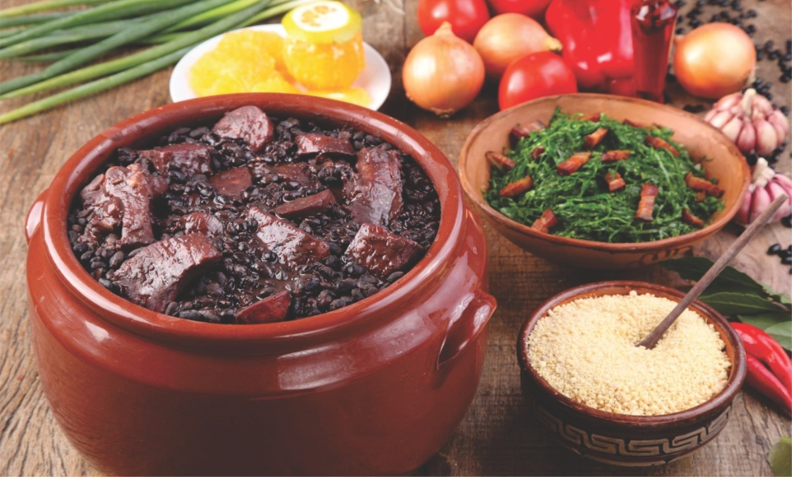

Brazilian cuisine is the set of cooking practices and traditions of Brazil, and is characterized by European, Amerindian, African, and most recently Asian (mostly Japanese) influences.[1] It varies greatly by region, reflecting the country's mix of native and immigrant populations, and its continental size as well. This has created a national cuisine marked by the preservation of regional differences.
Ingredients first used by native peoples in Brazil include cashews, cassava, guaraná, açaí, cumaru and tucupi. From there, the many waves of immigrants brought some of their typical dishes, replacing missing ingredients with local equivalents. For instance, the European immigrants (primarily from Portugal, Italy, Spain, Germany, Poland and Switzerland) were accustomed to a wheat-based diet, and introduced wine, leafy vegetables, and dairy products into Brazilian cuisine. When potatoes were not available they discovered how to use the native sweet manioc as a replacement.[3] Enslaved Africans also had a role in developing Brazilian cuisine, especially in the coastal states. The foreign influence extended to later migratory waves—Japanese immigrants brought most of the food items that Brazilians would associate with Asian cuisine today,[4] and introduced large-scale aviaries, well into the 20th century.

Root vegetables such as manioc (locally known as mandioca, aipim or macaxeira, among other names), yams, and fruit like açaí, cupuaçu, mango, papaya, guava, orange, passion fruit, pineapple, and hog plum are among the local ingredients used in cooking.
Some typical dishes are feijoada, considered the country's national dish,[6] and regional foods such as beiju [pt], feijão tropeiro [pt], vatapá, moqueca, polenta (from Italian cuisine) and acarajé (from African cuisine).[7] There is also caruru, which consists of okra, onion, dried shrimp, and toasted nuts (peanuts or cashews), cooked with palm oil until a spread-like consistency is reached; moqueca capixaba, consisting of slow-cooked fish, tomato, onions and garlic, topped with cilantro; and linguiça, a mildly spicy sausage.

The national beverage is coffee, while cachaça is Brazil's native liquor. Cachaça is distilled from fermented sugar cane must, and is the main ingredient in the national cocktail, caipirinha.
Cheese buns (pães-de-queijo), and salgadinhos such as pastéis, coxinhas, risólis and kibbeh (from Arabic cuisine) are common finger food items, while cuscuz branco (milled tapioca) is a popular dessert.